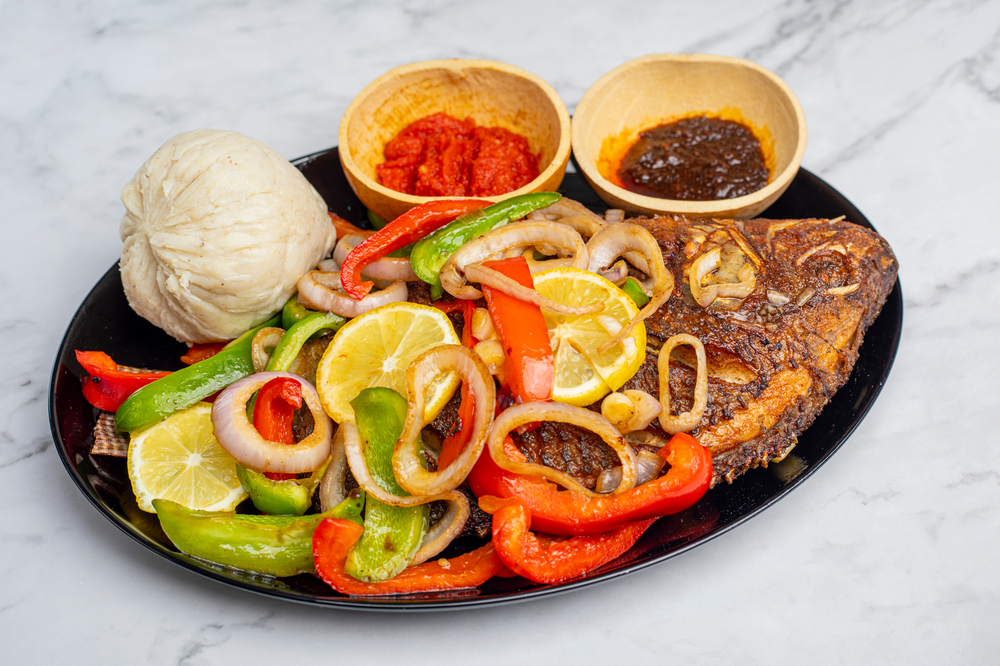

Banku

Finished Banku
This is how your final banku should look like when it is well-prepared
It is very delicious and mostly eaten by people in the coastal areas of Ghana !
Ingredients
- Cassava Dough
- Corn Dough
- Okro
- Pepper
- Meat/Fish/Crabs
Steps
- Mix the cassava dough and corn dough to make it uniform
- Put on fire and stair/li>
- Stair till it becomes heavy and make it like TZ
- Your banku is ready